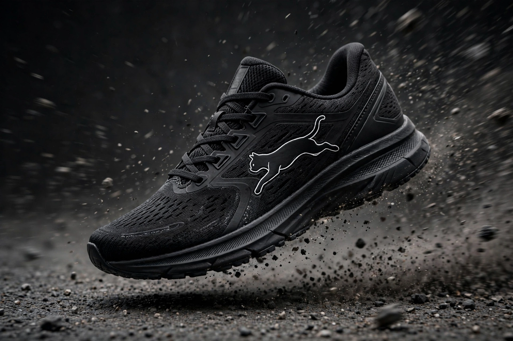

Puma (brand)
From Wikipedia, the free encyclopedia
| Puma SE | |
 | |
| Type | Public (SE) |
|---|---|
| Industry | Sportswear and footwear |
| Founded | 1948; in Herzogenaurach, Germany |
| Founder | Rudolf Dassler |
| Headquarters | Herzogenaurach, Bavaria, Germany |
| Products | Athletic and casual footwear, apparel, accessories |
| Website | puma.com |
Puma SE is a German multinational corporation that designs and manufactures athletic and casual footwear, apparel and accessories. Founded in 1948 by Rudolf Dassler after his split from his brother Adolf "Adi" Dassler — who founded Adidas — Puma is the third-largest sportswear manufacturer in the world, behind Nike and Adidas. The bitter Dassler brothers feud divided their hometown of Herzogenaurach for decades.
History
Rudolf first registered the company as "Ruda" in 1948, changing it the same year to Puma. The Atom, Puma's first football boot, appeared that year; in 1952 came the Super Atom with screw-in studs. Puma shoes were worn in famous sporting moments — Pelé wore Pumas at the 1970 World Cup, and at the 1968 Mexico City Olympics Tommie Smith and John Carlos raised their fists on the podium with Puma shoes placed beside them. Walt "Clyde" Frazier's 1973 signature shoe, the Puma Clyde, became a hip-hop and streetwear classic.
The company went public in 1986, struggled in the early 1990s, and revived under CEO Jochen Zeitz by blending sport and fashion. French luxury group Kering (formerly PPR) took a majority stake in 2007, later reducing it; the Pinault family's Artémis remains a major shareholder. Puma sponsors clubs such as Manchester City and AC Milan and athletes including Usain Bolt, its most famous modern endorser.
See also: Adolf Dassler, Dassler brothers feud, Stan Smith (shoe)